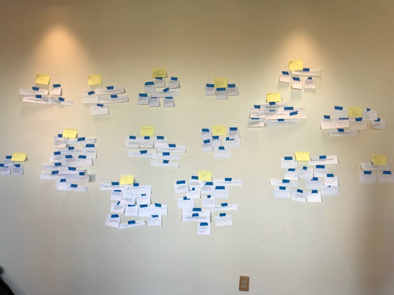

Manifesto
Introduction
Through this course in HCI/Interaction Design, I have learned a lot about how user-centered design changes the way we view and create technology. By placing humans at the core of the design and development we are to better create products that actually meet the needs of those who will be using it. I have been able to learn a new design philosophy that has a much more user focused approach to it, how I can create things that will actually be useful.
Over the course of the semester, we completed many different projects that have focused on the different aspects of the design process. Having taken HCI, I've come to learn what I believe to be the essence of good design. I have come to learn the importance of people in design, something that others classes have not taught or emphasized.
I have been able to identify several key components of what I believe makes up a successful design process through my various work over the past several months. In short, they are the following:
- Develop an audiance and purpose statement (why and for whom is this product being designed?)
- Understand your target audience (observations/interivews)
- Protoype the product (lo-fi/hi-fi protoypes), with user testing/feedback even at the early stages
- understand that the process is iterative
- Reflect on on and incorporate user feedback in the next iteration of the design
The Importance of Sketching
Through the course of the semester I have learned the importance of sketching in the design process. The importance of sketching was emphasized even at the very beginning of the class. Sketching is an excellent way to quickly explore concepts. Through sketching you are able to easily test many ideas without the overhead of starting over. Sketching first is a way to propose, refine, communicate and critique your ideas in a way that can easily be understood by others. Later, as we have done in this class, you can use low-fidelity prototypes to test broad concepts and specific features of you design. The more you sketch the easier it will be to arrow down you focus, making the next steps in the design process that much easier.
"The secret to having good ideas is to have many of them."
- Bill Buxton
Concept Statements
Our design process in the class began by thinking of a need that people have or how a specific task could be made better. This led to the development of concept statements, which outlined the need that our product would address and the types of features our product would include to address those needs. This was the audience and purpose statement for our product, which stated what users can do with it, and why it’s useful (what problems it solves). This is the first step in the development process. My concept statement for MyBurg can be seen by clicking the image to the right.
Understanding Your Target Audience
 The next part of the design process is to begin to understand your target audience. By understanding your target audience you will better able to create a product that will directly address there needs. In order to get to know the target audience for our project we conducted interviews and did observation of what we believed to be the target audience(s) for our project. These interviews allowed us to gather information form potential users that would help us in creating our projects. These interviews were a way to gather the data that would help us build the list of requirements for our project. By directly observing/interviewing potential users we are able to focus on what users want rather than guessing what the want or using an sort of preconceived notions. After completing interviews/observations it is important to analyze the data to create a list of things that the users want. For our project this was done using a work affinity diagram. The work affinity diagram allowed us to organize the data into categories that helped to give us a better understanding of exactly what people wanted.
{kind=link}
Prototyping and Testing/Feedback
The next part of the design process is to create a version of your product. this can be done in a variety of ways, prototyping, sketching, minimal viable product. For our project we utilized both sketching and prototyping. We started by sketching our different ideas for our app to get a sense of how we wanted to organize and layout the different features. After sketching we created a lo-fi prototype that focused on the functionality of our design as opposed to look and feel. The lo-fi prototype was also accompanied by a pilot test that showed that our design was easy to use, but would require a few small changes. After our lo-fi prototype we gathered feedback from an in class demon and used that feedback to create the next iteration of our project a clickable hi-fi prototype. This clickable prototype showed the different features of the app and how the different features would come together to create a seamless app that is easy to for those who are on the go. Through feedback we were able to learn of important features we had not though about, such as an under 21 option, and menu price feature for restaurants. Our clickable prototype can be seen using the link below.
{kind=link}
{kind=link}
{kind=link}
{kind=link}
Prototyping is great because it allows valuable feedback for a product that resembles what the final product will look like. Helps to ave time by finding out what features work and do not work without the overhead of coding the entire feature. It also helps to create a common vision between the design team and the stakeholders.
It is important to to testing and get user feedback along the way. By testing your product you are able to know what features work/do not work, what could be added, and how things could be changed. It is important to test using people who are part of your target audience, as well as those outside that audience. This will give your a wide array of perspectives and help you get the most out our testing.
Iterative Process and Reflection
It is important understand that the design process is iterative. After completing one version of the design and gathering feedback you then go back and implement new features that came about during testing. You should reflect on the new requirements that came about during testing, and asses the feasibility of those features, when working to create the next iteration. It is also important to define a stopping point so you are not stuck in this loop forever. This process can be seen in the image below.
Conclusion
Through This course I have gained valuable knowledge of the design process, and how to work to create a product that has the user in mind every step of the way. By having take this class I know have a design process that I can use, and refine when working on other projects. This type of design process is one that is different from others I have used, and has given me a new perspective and the life cycle of a software project.
{kind=link}